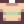

Savia
Ir a la navegación
Ir a la búsqueda
| Savia | |||||
| Un fluido que se obtiene de los árboles. | |||||
| Información | |||||
| Origen | Árboles, Babas | ||||
| Energía / Salud |
|
||||
| Precio de venta | |||||
La Savia es un recolectable que cae de los árboles al talarlos. También se obtiene por medio de una resinera puesta en un árbol de caoba (este producirá cada día) y lo sueltan también las babas exceptuando a las babas grandes, se utiliza para varias recetas. Se puede consumir, pero perderás 2 puntos de energía.
Recetas
| Imagen | Nombre | Descripción | Ingredientes | Se consigue |
|---|---|---|---|---|
| Fertilizante básico | Mejora un poco la calidad del suelo y hace más fácil conseguir cultivos de calidad. Úsalo sobre suelo arado. | |||
| Fertilizante deluxe | Mejora la calidad del suelo y hace más fácil conseguir cultivos de calidad. Úsalo sobre suelo arado. | |||
| Fertilizante de lujo | Mejora enormemente la calidad del suelo, aumentando la probabilidad de que crezcan cultivos de calidad. Se mezcla con la tierra. | |||
| Antorcha | Proporciona una cantidad modesta de luz. | Empiezas con ella | ||
| Corcho trampa | Hace que los peces escapen más despacio cuando no recoges el sedal. | |||
| Semillas de fibra | Plante esto en cualquier época del año. No requiere riego. Cosecha con la guadaña. Tarda 7 días en crecer. | |||
| Corcho de calidad | Aumenta la calidad de los peces que pescas. | |||
| Estatua de las Bendiciones | Tocar la estatua da una bendición distinta cada día. |
Regalos
| Reacciones de Aldeanos
| |
|---|---|
| Odia | |
Lotes
La savia es usada en el  Lote Pegajoso en la sala de manualidades (mezclada).
Lote Pegajoso en la sala de manualidades (mezclada).
Sastrería
La savia puede usarse en el carrete de la máquina de coser usando Tela en el alimentador para crear una  Camiseta con rayas. También puede ser utilizado como tinte de color amarillo en la máquina de coser o en los tarros de tinta para cualquier prenda de vestir (teñible).
Misiones
La savia no se utiliza en ninguna misión .